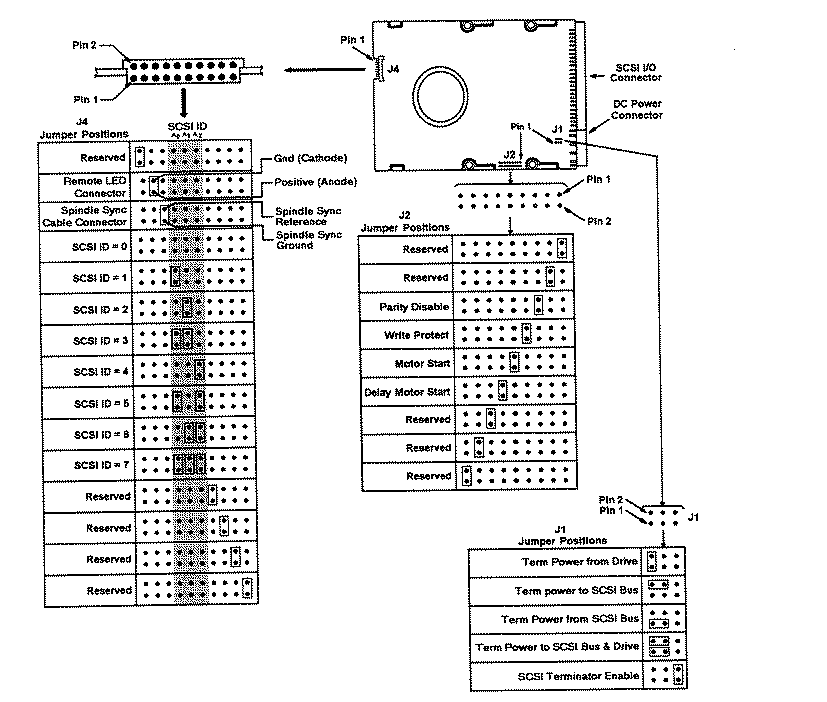

Caution
The A3304A represents two interchangeable 2-GB disk drives:
A3304A Hard Disk Drive (Manufacturing Product #ST32550N)
The drive SCSI ID (address) is set on J4 (see the following figure). Table 1 shows pin-sets for the options available with the A3304A 3.5-inch hard disk drive. The actual settings depend upon the system in which the disk drive is installed and its location in within that system. See your service manual or CE handbook for specific configuration and jumper setting information.
Table 2 provides a functional description of the configuration jumper settings.
A pin-set is either shorted (with a jumper installed) or open (without a jumper). The J4 option settings are shown in the following figure.
| Function | Connector | Pin-Set |
| Term Power from Drive | J1 | 1-2 |
| Term Power to SCSI Bus | J1 | 1-3* |
| Term Power from SCSI Bus | J1 | 2-4* |
| Enable Terminators | J1 | 5-6 |
| Reserved | J2 | 1-2 |
| Reserved | J2 | 3-4 |
| Parity Disable | J2 | 5-6 |
| Write Protect | J2 | 7-8 |
| Enable Motor Start | J2 | 9-10 |
| Delay Motor Start | J2 | 11-12 |
| Reserved | J2 | 13-14 |
| Reserved | J2 | 15-16 |
| Reserved | J2 | 17-18 |
| Reserved | J4 | 1-2 |
| LED | J4 | pin 3= Anode, pin 4= Cathode |
| Spindle Sync | J4 | pin 5= GND, pin 6=Ref |
| SCSI ID 0 | J4 | 7-8 |
| SCSI ID 1 | J4 | 9-10 |
| SCSI ID 2 | J4 | 11-12 |
| Reserved | J4 | 13-14 |
| Reserved | J4 | 15-16 |
| Reserved | J4 | 17-18 |
| Reserved | J4 | 19-20 |
Table 1: A3304A Option Jumpers (Manufacturing Product #ST32550N)

Figure 1: A3304A 2-GB Drive ID and Option Header (MFG #ST32550N)
| Connector | Pin-Set | Function | Configuration |
| J1 | 1-2 | Term Power from Drive | Open: No terminator power is connected to the drive internal connectors. Jumpered: The Drive supplies its own terminator power. |
| J1 | 1-3 | Term Power to SCSI Bus | Open: Drive does not supply term power to SCSIpin 26. Jumpered: Drive supplies termination power to pin 26 of the SCSI bus. |
| J1 | 2-4 | Term Power from SCSI Bus | Open: No termination power from SCSI bus to drive terminators. Jumpered: Termination power from SCSI bus connected to drive terminators |
| J1 | 5-6 | Terminator Enable | Open: Drive internal terminators are not connected to the SCSI bus. Jumpered: Drive internal connectors are connected to the SCSI bus. |
| J2 | 1-2 | Reserved | Open |
| J2 | 3-4 | Reserved | Open |
| J2 | 5-6 | Parity Disable | Open: Parity checking and reporting by the drive is enabled. Jumpered: Drive does not report the result of parity checking the host |
| J2 | 7-8 | Write Protect | Open: Drive is not write protected. Jumpered: Entire drive iswrite protected. |
| J2 | 9-10 | Enable Motor Start | Open: Spindle will spin up according to the setting of the Delay Motor Start option. Jumpered: Drive starts spindle when Start Unit command is received. |
| J2 | 11-12 | Delayed Motor Start | Open: Spindle starts immediately after power on, unless Enable Motor Start jumper is installed. Jumpered: Spindle startup is delayed by SCSI ID times 10 seconds. |
| J2 | 13-14 | Reserved | Open |
| J2 | 15-16 | Reserved | Open |
| J2 | 17-18 | Reserved | Open |
Table 2: A3304A J2 Jumper Function Description (Manufacturing Product #ST32550N)